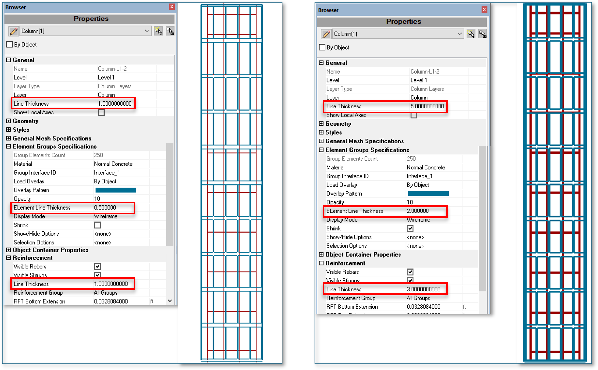

In ELS V11, we've enhanced the Properties browser with new visualization options:
Line Thickness Control
Users can now adjust line thickness for:
- Drafts
- Structural objects' frames
- Reinforcement
- Elements

The new options for changing line thickness in the properties browser are shown below along with their effect.
